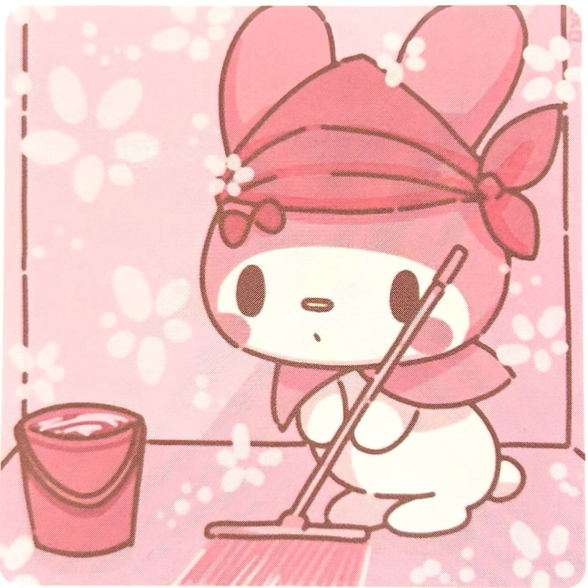

My Melody

My Melody is a cute and iconic character from the Sanrio franchise, known for her distinctive pink hood that covers her ears. She originally appeared in various Sanrio merchandise, including stationary and accessories, and later became a part of animated series like "Onegai My Melody." She's a sweet and friendly rabbit who enjoys baking, making her a beloved character in the world of kawaii culture.
- Cuteness
- My Melody's design is irresistibly adorable, with her pink color scheme, big eyes, and iconic hood. Many people are drawn to her cute appearance.
-
Sweet and Kind Personality
- My Melody is known for her gentle and caring nature. She's always willing to help others and spread positivity, which resonates with those who appreciate kindness and empathy.
-
Innocence and Simplicity
- My Melody embodies innocence and simplicity, making her a relatable and charming character. In a world that can sometimes be complex and stressful, her straightforward and pure-hearted approach is endearing to many.